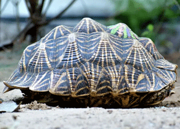
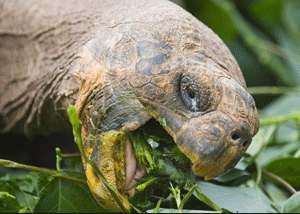
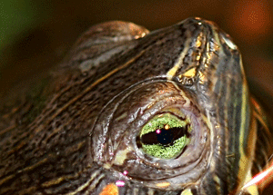

Shell
The shell of a turtle is unique among vertebrates and serves to protect the animal and provide shelter from the elements. It is primarily made of 50–60 bones and consists of two parts: the domed, dorsal (back) carapace and the flatter, ventral (belly) plastron. They are connected by lateral (side) extensions of the plastron. The carapace is fused with the vertebrae and ribs while the plastron is formed from bones of the shoulder girdle, sternum, and gastralia (abdominal ribs). During development, the ribs grow sideways into a carapacial ridge, unique to turtles, entering the dermis (inner skin) of the back to support the carapace. The development is signaled locally by proteins known as fibroblast growth factors that include FGF10. The shoulder girdle in turtles is made up of two bones, the scapula and the coracoid. Both the shoulder and pelvic girdles of turtles are located within the shell and hence are effectively within the rib cage. The trunk ribs grow over the shoulder girdle during development.
Diet
Most turtle species are opportunistic omnivores; land-dwelling species are more herbivorous and aquatic ones more carnivorous. Generally lacking speed and agility, most turtles feed either on plant material or on animals with limited movements like mollusks, worms, and insect larvae. Some species, such as the African helmeted turtle and snapping turtles, eat fish, amphibians, reptiles (including other turtles), birds, and mammals. They may take them by ambush but also scavenge. The alligator snapping turtle has a worm-like appendage on its tongue that it uses to lure fish into its mouth. Tortoises are the most herbivorous group, consuming grasses, leaves, and fruits. Many turtle species, including tortoises, supplement their diet with eggshells, animal bones, hair, and droppings for extra nutrients. Turtles generally eat their food in a straightforward way, though some species have special feeding techniques.
Senses
Turtles make use of vision to find food and mates, avoid predators, and orient themselves. The retina's light-sensitive cells include both rods for vision in low light, and cones with three different photopigments for bright light, where they have full-color vision. There is possibly a fourth type of cone that detects ultraviolet, as hatchling sea turtles respond experimentally to ultraviolet light, but it is unknown if they can distinguish this from longer wavelengths. A freshwater turtle, the red-eared slider, has an exceptional seven types of cone cell. Sea turtles orient themselves on land by night, using visual features detected in dim light. They can use their eyes in clear surface water, muddy coasts, the darkness of the deep ocean, and also above water. Unlike in terrestrial turtles, the cornea (the curved surface that lets light into the eye) does not help to focus light on the retina, so focusing underwater is handled entirely by the lens, behind the cornea.